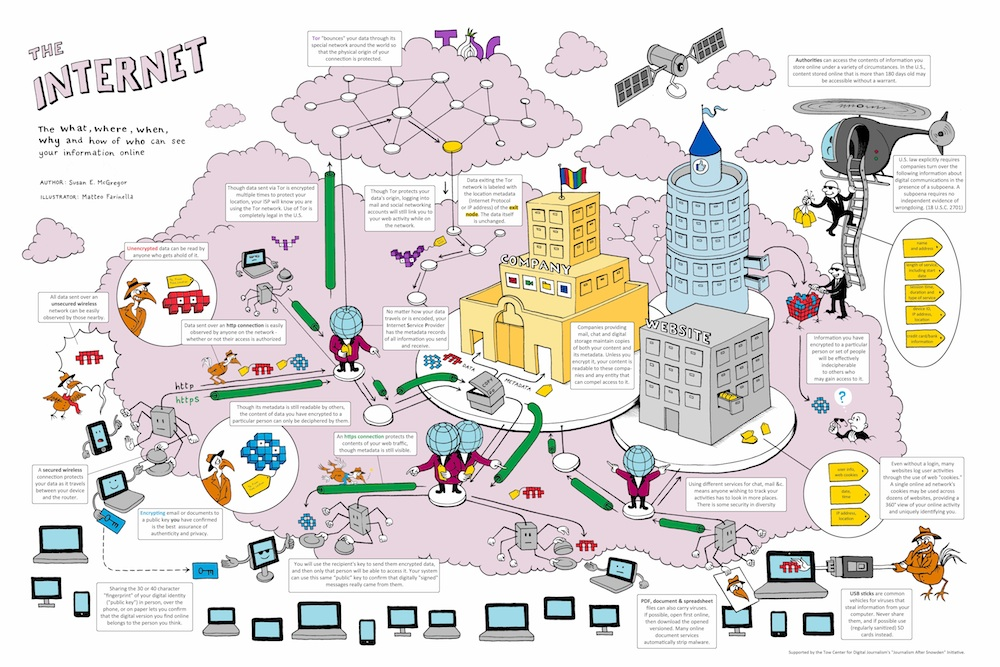

2. Basic Concepts
CENTRO | 2016
2.1 OSI Layer Model
At the beginning of the computer networks (1980's) all companies had
different ways to communicate their computers.
As the network become bigger and bigger, the world realized how serious
will be the incompatibility.
Then, the concept of network protocol was born.
A network protocol is a list of rules that allow two or more computers
transmit information.
These rules defines the syntax, semantics and synchronization of
the information and possible error recovery methods.
The OSI (Open System Interconnection) Model is the standard conceptual model
of the today computer communications.
This model partitions a communication in abstract layers.
Each layer have different network protocols.

2.2 TCP / UDP Protocol
2.3 HTTP Protocol
2.4 HTML
2.5 CSS
2.6 Javascript
2.7 Client and server architecture